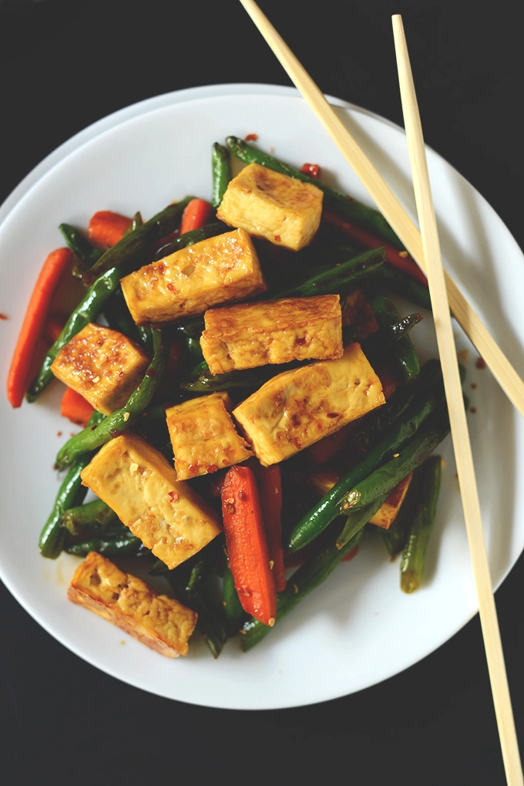

Description:
Tofu stir fry has all the makings for a fast, healthy dinner you can turn to again and again. For those with
dietary considerations, this tofu stir fry is vegan naturally and (if you use gluten free tamari in place of soy
sauce) it’s gluten free as well. More stir fry for all!
Ingredients:
- 1 396-g package firm or extra-firm tofu
- 200 g roughly chopped green beans
- 128 g diced carrots or red pepper
- 30 ml toasted sesame oil for sautéing (or sub peanut or coconut)
- 60 ml low-sodium soy sauce (ensure gluten-free for GF eaters)
- 6 g fresh grated ginger
- 27 g organic brown sugar (reduce slightly for less sweet sauce)
- 15 ml agave or maple syrup (or honey if not vegan // reduce slightly for less sweet sauce)
- 7 g cornstarch
Steps:
- Preheat oven to 400 degrees F (204 C) and begin drying your tofu. Drain, remove it from the package and
place between two thick towels folded into the shape of the tofu. Then place a plate or bowl on top and top
it with something heavy like a book or skillet. Alternatively, use a tofu press.
-
Let it dry for about 15 minutes, changing your towels if they get too wet. Once dry, unwrap, chop tofu into
roughly 1-inch cubes or rectangles
- Arrange tofu on a lightly greased or parchment-lined baking sheet to prevent sticking and bake for a total
of 25-35 minutes, flipping once halfway through to ensure even cooking. This will dry out the tofu and help
give it a more meat-like texture. If you want a tougher texture, cook it for 30-35. For a slightly more
tender texture, pull it out at 20-25 minutes to check.
- Once it’s golden brown and a bit tough and firm, remove from the oven set it out to dry a bit more while you
prep your vegetables. Ideally, it would set out another 45 minutes or even longer. I haven’t tried letting
it set out for much longer, but I don’t think it would hurt either way.
- If serving over rice, start the rice at this point.
- In a small mixing bowl, whisk together all of the sauce ingredients – set aside.
- To a large skillet over medium-high heat, add sesame oil and swirl to coat. Then add veggies and toss to
coat. Cook for 5-7 minutes, stirring often. When the vegetables have some color and have softened a bit, add
the sauce and stir. It should bubble and thicken. Then add the tofu and stir to coat.
- Cook the mixture for 3-5 minutes, stirring often. When veggies are cooked to your preferred doneness, remove
from heat. Serve as is or over rice for a more filling meal. Best when eaten fresh, though will keep in the
refrigerator for a couple days.